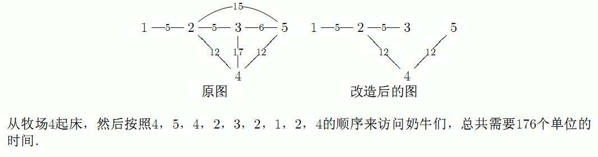

* 第 1 行: 用空格隔开的两个整数N和P * 第 2..N+1 行: 第i+1行包含了一个整数: C_i * 第 N+2..N+P+1 行: 第 N+j+1 行包含用空格隔开的三个整数: S_j, E_j 和 L_j
Farmer John变得非常懒, 他不想再继续维护供奶牛之间供通行的道路. 道路被用来连接N (5 <= N <= 10,000)个牧场, 牧场被连续地编号为1..N. 每一个牧场都是一个奶牛的家. FJ计划除去P(N-1 <= P <= 100,000)条道路中尽可能多的道路, 但是还要保持牧场之间的连通性. 你首先要决定那些道路是需要保留的N-1条道路. 第j条双向道路连接了牧场S_j和E_j (1 <= S_j <= N; 1 <= E_j <= N; S_j != E_j), 而且走完它需要L_j (0 <= L_j <= 1,000)的时间. 没有两个牧场是被一条以上的道路所连接. 奶牛们非常伤心, 因为她们的交通系统被削减了. 你需要到每一个奶牛的住处去安慰她们. 每次你到达第i个牧场的时候(即使你已经到过), 你必须花去C_i (1 <= C_i <= 1,000)的时间和奶牛交谈. 你每个晚上都会在同一个牧场(这是供你选择的)过夜, 直到奶牛们都从悲伤中缓过神来. 在早上起来和晚上回去睡觉的时候, 你都需要和在你睡觉的牧场的奶牛交谈一次. 这样你才能完成你的交谈任务. 假设Farmer John采纳了你的建议, 请计算出使所有奶牛都被安慰的最少时间. 对于你前10次的提交, 你的程序会在一部分正式的测试数据上运行, 并且返回运行的结果.
* 第 1 行: 用空格隔开的两个整数N和P * 第 2..N+1 行: 第i+1行包含了一个整数: C_i * 第 N+2..N+P+1 行: 第 N+j+1 行包含用空格隔开的三个整数: S_j, E_j 和 L_j
第 1 行: 一个整数, 所需要的总时间(包含和在你所在的牧场的奶牛的两次谈话时间).
5 7
10
10
20
6
30
1 2 5
2 3 5
2 4 12
3 4 17
2 5 15
3 5 6
4 5 12
176
